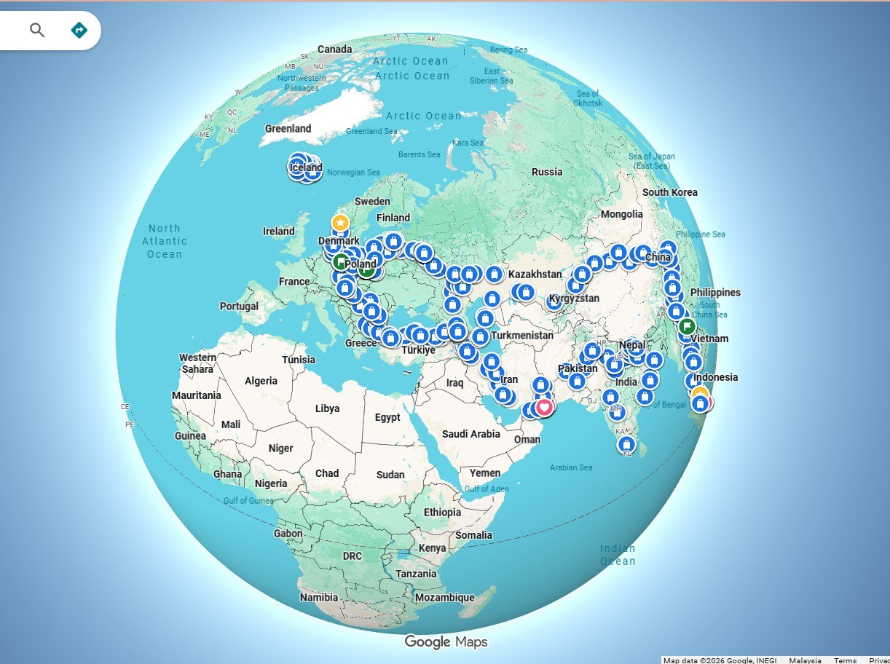

About Me
Tuzi, Toyotaki, and the road.
A Malaysian solo campervan traveller who completed 306 days, 28 countries, and 42,049 km in a Toyota Hiace campervan.
Contact / Media
This section is a placeholder for contact details, YouTube links, media notes, and official journey summary.
Journey: 1 solo traveller · 28 countries · 306 days · 42,049 km.
Vehicle: Toyota Hiace 2011 campervan, Toyotaki.
ROUTE AT A GLANCE
From Malaysia toward Europe, Iceland, and back into memory.
A globe view of the 306-day overland route: 42,049 km across 28 countries, carried by Toyotaki and recorded as visual memory rather than a perfect map.
